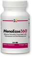

At Last, Clinically Researched Relief for
Hot Flashes, Night Sweats and Mood Swings That Really Works!
Let's face it, going through menopause can be absolutely miserable.
From the hot flashes, brain fog, sleep problems, weight gain and other physical changes to toxic emotions like irritability and anger that can ruin friendships and even tear apart marriages.
Some women experience mood swings so severe they become unable to work or even interact normally. They're not living; they're barely even coping with these symptoms.
But for many of the roughly 80% of women who experience symptoms associated with this natural life transition,[1] the most frustrating part of dealing with "the change" isn't even a symptom; it's the frequently dashed hope of finding something-anything-that will provide relief.
I'm sure you have received plenty of suggestions from well-meaning friends and relatives—oddly named concoctions and herbs like dong quai, black cohosh, ginseng, wild yam, St. John's wort and skullcap.
You can undoubtedly add a few other "remedies" to this list. And with each new attempt, you probably rip open the packaging with eager anticipation, give it a try and-nothing happens. It turns out to be just one more disappointment.
And even if you manage to find something that provides a little help, you still have to worry about side effects - like nausea, indigestion or constantly running to the bathroom. Some can even cause liver toxicity[2] and more unwanted hormonal disruptions.[3]
Allow me to introduce myself. I'm Dr. Erin Kinney, Naturopathic Physician and Contributing Editor for the Live in the Now newsletter, one of the fastest-growing natural health publications in the nation. Helping women suffering through peri-menopause and menopause is a big part of my naturopathic medical practice. And while diet and lifestyle changes can certainly provide some help, please keep reading to discover the right combination of targeted herbs that work wonders for many of my patients.
Don't let menopause symptoms turn your life into a nightmare.
Frankly, it's no wonder menopause can be so difficult. When your hormone levels change so rapidly and dramatically, nothing can really prepare you for the physical and emotional changes that seem to hit you like a punch to the gut.
What's more, the transition of peri-menopause, menopause and post-menopause can last 10 years or even longer.[4] That's an eternity if you're experiencing debilitating or even just uncomfortable symptoms.
For years, there hasn't been much that has worked quickly and with any consistency to address the symptoms of menopause.
But now, there is a natural menopause solution backed by multiple gold-standard studies that has been scientifically shown in as little as 7 days to help: [5,6,7]
- Reduce the severity and frequency of hot flashes and night sweats
- Ease the roller-coaster mood swings common with menopause
- Relieve vaginal dryness and sexual dysfunction associated with menopause
- Reduce sleeplessness that leaves you tossingand turning all night
- Fight off fatigue that drains your energy and stamina
- Support brighter emotional health with less anxiety
- Relieve numbness, tingling and even joint discomfort
Please don't give up on the idea of natural relief. Not with this new advance finally on the scene.
This new approach to menopause relief is the result of an exhaustive scientific effort.
No less than 71 botanical herbs were carefully screened for their effects and safety, until only three remarkable extracts were left standing above the rest. These three herbs wowed researchers with their ability to safely optimize female hormonal function and provide dramatic menopause relief.
And you know what? None of the "usual remedies" made the cut. Not soy, dong quai, flaxseed, black cohosh, red clover, wild yam or any of the others you may have tried.
In fact, the three botanicals for menopause symptoms that impressed researchers the most are virtually unknown in North America.
I was surprised to see these "new" answers to this age-old problem-until I saw
the dramatic research myself.
While these three menopause-easing wonders may be new to you, they've actually been used by generation after generation of women in Asia, where they are as familiar as aspirin is to us.
Let me tell you a little bit more about each one of these scientifically proven herbal solutions:
-
First is Phlomisumbrosa
Asian cultures have brewed pain-easing teas with the root of this plant, a member of the mint family, for thousands of years. And modern studies show it does indeed have significant anti-inflammatory and pain-relieving powers.[8]
It's also rich in antioxidants that flush away some of the most dangerous free radicals, including those that damage cells and DNA.[9] Both inflammation and free radicals are linked to female sexual dysfunction,[10,11] so it's no wonder this herb is an ally for women.
-

Second is Cynanchumwilfordii
A flowering herb used in Eastern medicine to improve circulatory function and overall health.
It's also packed with anti-inflammatory agents and other biologically active compounds. And studies indicate that it can provide significant vascular benefits and promote healthier arteries,[12,13] while also supporting healthy hormonal balance and sexual function.
-

Third is Angelica gigas Nakai
Another major medicinal herb that is in the same botanical family as the carrot. It contains phytochemicals that specifically work through the central nervous system to ease discomfort throughout the body.[14,15]
This herb has a long history of use for supporting women's reproductive health, and research has shown that it may help support bone density and ovarian health.[16] Experts say it also promotes clear thinking by preventing the breakdown of an essential neurotransmitter called acetylcholine.[17]
Shocking results
when the three top herbs were combined!
As you can see, each of these powerful herbs has amazing benefits in their own right.
Researchers were so intrigued by the effectiveness of each of these safe, time-tested botanicals that they decided to conduct further research. And when they combined them in a unique formulation and put them to the test, it didn't take long for their interest to turn into amazement.
As it turns out, when these three herbs are combined, they work together synergistically to nudge the female body's hormones back into balance while providing profound relief.
Gold-standard trials were conducted on two continents and the researchers couldn't believe how quickly results were reported. For many women, this natural formula began reducing even their worst menopause symptoms in as little as one week.[5,6,7]
Just 7 days? That's 6 times FASTER than many other natural solutions!
And the results grew better as the weeks went by. One double-blind, placebo-controlled study involved American women with moderate to severe menopausal symptoms, according to the Kupperman Menopause Index (KMI).[5]
The group taking the three-herb combination saw their average KMI score decrease by an amazing 61% at the end of the 12-week trial. As for specific complaints:
Hot flashes/sweats Decreased
61%Vaginal dryness Decreased
59%Melancholy Decreased
57%Numbness/tingling Decreased
58%Sleep troubles Decreased
Nervousness Decreased
Fatigue decreased Decreased
Joint aches Decreased
These results certainly indicate odds stacked in your favor that this breakthrough team of natural botanicals can provide significant relief from your menopause-related misery.
And two additional studies documented the same positive results.
A second 12-week double-blind, placebo-controlled clinical trial involved women who suffered moderate to severe symptoms of menopause.[6] Overall, the KMI score dropped 58% after 12 weeks, which is remarkably consistent with the other study. It, too, found similar improvements for the same specific symptoms studied in the U.S. clinical trial.
A third double-blind, placebo-controlled clinical trial spanned a full 12 months.[7] It found that menopause symptoms, including hot flashes and painful sexual intercourse, were significantly improved compared with the placebo group.
What's more, this one-year study looked at another critical factor for women: bone density. It found that bone density level of the femoral neck bone increased by more than 2% among women taking this combination of ingredients, while bone density in the placebo group decreased by 1%.[7]
Increased bone density, too? This solution is looking better and better!
The scientists call their patented break through EstroG-100®. It's an award-winning advance in the field of women's health, and it's now available in North America in a formula called MenoEase360™ from Stop Aging Now, a leading U.S. provider of premium-quality supplements for over 20 years.
Stop Aging Now worked hard to make sure this formula contained the exact doses used in the research to guarantee effectiveness. At the same time, they made sure this high-quality product was affordable, so the maximum number of women could achieve relief!
It's priced as low as 66 cents per day, which I believe is a small price to pay for fast-acting, everyday relief. That's why I now recommend this amazing formula to many of my older female patients.
MenoEase360 is a non-hormonal solution- just what many experts recommend
While the research is certainly impressive, there's another important factor every woman should consider when choosing a menopause supplement.
Studies show that the ingredients in MenoEase360 enhance hormonal function by selectively optimizing estrogenic activity throughout the body—essentially helping the body self-regulate its hormone levels.
The ingredients in MenoEase360 neither boost nor block estrogen.[5,6,7] And they don't affect other hormones, including estradiol, growth hormone or FSH (follicle-stimulating hormone), as other natural remedies can.
Many leading experts believe that a non-estrogenic solution is the preferable choice for menopause relief.[3] Introducing new hormones into your body, as many popular remedies do, can interfere with your own natural ability to produce estrogen.
Non-estrogenic alternatives, on the other hand, can help stimulate your own production of natural hormones. That means MenoEase360 can help, not hinder, your ability to make more essential hormones on your own.[3]
Studies also show that its ingredients won't affect your weight or body mass index (BMI), while estrogenic botanicals can lead to weight gain.[5,6,7] That's another big plus for MenoEase360 compared with other choices that are on the market.
MenoEase 360 Works Much
Better and Faster on the Most Common Menopausal Symptoms
| Symptom | MenoEase360 MenoEase360 | Black Cohosh | Soy/Genistein |
|---|---|---|---|
| Manages Hot Flashes | Yes | Yes | Yes |
| Manages Night Sweats | Yes | No | No |
| Manages Vaginal Dryness | Yes | No | No |
| Manages Insomnia | Yes | No | No |
| Manages Mood | Yes | No | No |
| Manages Joint Discomfort | Yes | No | No |
| Non-Estrogenic | Yes | Yes | No |
| Weight Change Reported | No | No | Yes |
| Links to Liver Toxicity | No | Yes | No |
| Links to Vaginal Bleeding | No | Yes | No |
| Time to Start Working | 7-10 days 7-10 days | 42 days | 42-50 days |
There's one more big reason why this botanical solution "passes the test" with flying colors
In addition to the substantial relief that MenoEase360 has been shown to provide for menopause symptoms, it is also among the safest options available.
Each of these botanicals has a long history of traditional use, and studies have found no indication of any side effects, even in the long-term 12-month study.[5,6,7] That can't be said for some menopause-relieving herbs, which can have toxic effects on the liver. Some have even been linked to vaginal bleeding.
MenoEase360 is a premium-grade formula made in Stop Aging Now's own FDA-inspected facility located in Florida, so you can also be sure that MenoEase360 contains 100% pure ingredients. That's important, because many menopause products can't make that promise. One report, for example, shows that 35% of all black cohosh sold is adulterated with fillers.[18]
MenoEase360's purity, safety and effectiveness make it an easy choice for any woman looking for natural menopause relief. And MenoEase360 is amazingly affordable, as low as $19.95 for a full month's supply, plus it ships to you for free.
Here’s What People Are Saying About MenoEase360….
365-Day Money-Back Guarantee,
Try it Today—Risk-Free!
For far too long, women have suffered through menopause with natural solutions that too often fail to live up to expectations. MenoEase360 changes everything. It contains the recommended daily dosage of the three-ingredient breakthrough that is improving the menopause experience for women all over the world by helping to:[5,6,7]
- Reduce the severity and frequency of hot flashes and night sweats
- Alleviate mood swings and insomnia associated with menopause
- Lessen symptoms of vaginal dryness that can make sex painful
- Reduce fatigue, nerve issues and joint discomfort
- Support bone density health during menopause
I'm confident that MenoEase360 is the fast-working and effective menopause solution you've been looking for. But you don't have to take my word for it. You can try it for yourself risk free with Stop Aging Now's 365-day guarantee of satisfaction.
This industry-leading guarantee means you can give MenoEase360 the same 12-week trial that produced such wonderful results in the studies I mentioned earlier—or even a full 12-month trial like the third study I cited- without risking a cent.
If you don't experience significant and satisfying results for yourself, Stop Aging Now will gladly send you a full refund—up to one year after purchase. And let's face it—with menopause symptoms, you'll know if it's working. There's no "maybe" about it.MenoEase 360 LIMITED-TIME OFFER
- Best value
- Great value
- Trial offer
This is NOT an automatic ship plan. No other charges will be made other than your initial order.